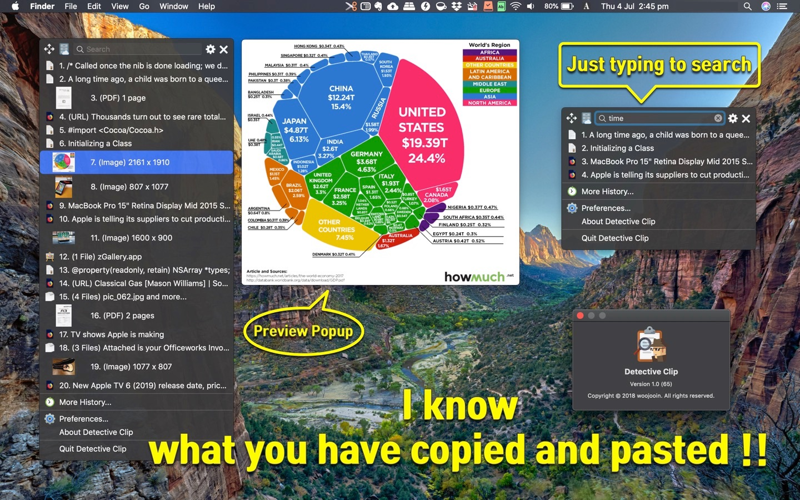
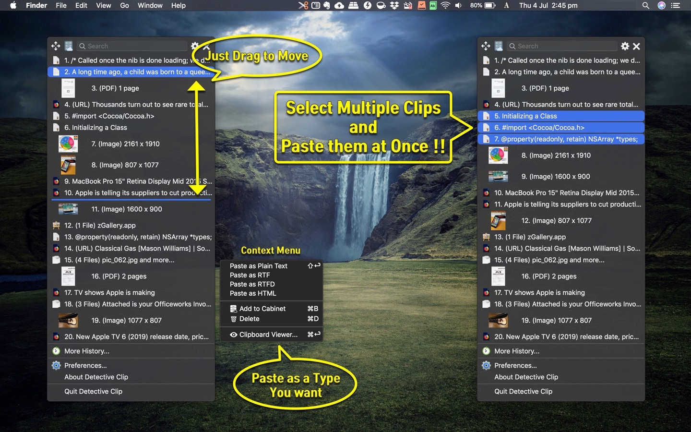
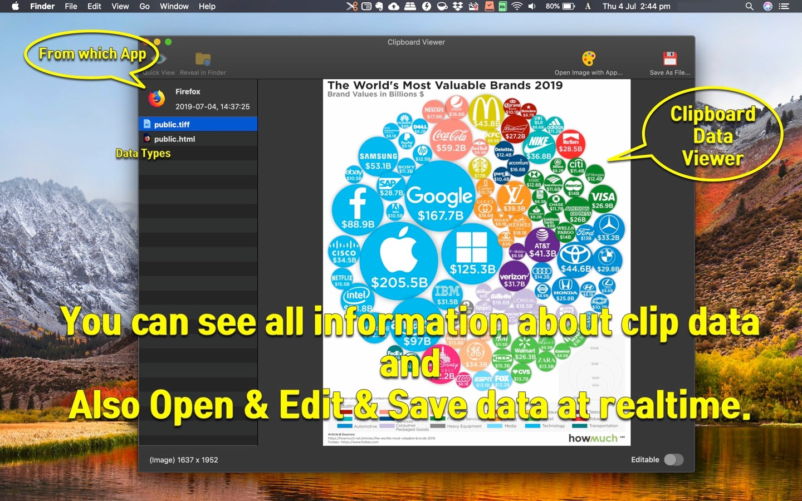

Never lose a clip
Clipboard history keeps recent copies ready. Search by keyword when you need something from earlier.
Mac App Store · Productivity
Clipboard History Manager
Keep everything you copy — search it, edit it, and paste it again in one click.

1Clipboard sits in the menu bar and remembers what you copy — text, images, PDFs, and links — so you can find and reuse clips without digging through documents.
Clipboard history keeps recent copies ready. Search by keyword when you need something from earlier.
Drag and drop to reorder or delete clips. Combine multiple clips, or paste in a chosen format such as text or image.
Global shortcuts, dark mode and themes, drag images or PDFs to paste, Open with… for images, and iCloud Cabinet sync.
History & search
Type a keyword to filter history quickly. URL clips can show extracted titles so links are easier to recognize.

Paste your way
Select multiple clips and paste them together. Paste in a specified format, preview clip types, and edit clip data when you need to fine-tune.

Shortcuts & sync
Customizable global shortcuts open 1Clipboard instantly. Sync stored clips with iCloud Cabinet, filter out specific apps, and match macOS dark mode or your own theme.
1Clipboard quietly records clipboard history from the menu bar.
Open with a shortcut, search, and pick the item you need.
Paste one or many clips, change format, edit, or drag to another app.
Native macOS clipboard manager by woojooin. Continuously updated for history, search, multi-clip paste, shortcuts, and iCloud sync.
I am the author and developer of 1Clipboard for Mac. I design, ship, and maintain the product end to end — clipboard history, search, paste workflows, shortcuts, localization, and App Store releases.
Built as a native Mac menu bar app with Objective-C and AppKit.